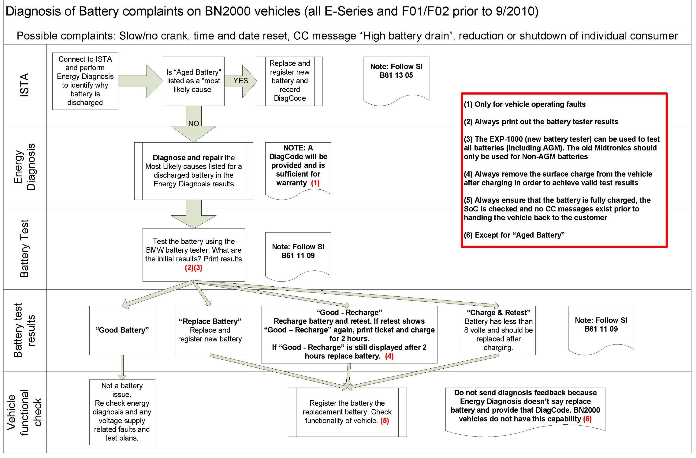

Battery - 'Discharged Battery' Energy Diagnosis Required
SI B61 13 05General Electrical Systems
March 2013
Technical Service
This Service Information bulletin supersedes SI B61 13 05 dated October 2012.
[NEW] designates changes to this revision
SUBJECT
Discharged Battery: Energy Diagnosis Must Be Performed
MODEL
[NEW] All vehicles produced from 3/2004 (except I-Bus vehicles)
[NEW] SITUATION
The electrical system of BMW vehicles has been subject to an ongoing development process over the last few years. This has led to increased demands being placed on the battery. This document covers important information for the dealer on how to handle "discharged battery" complaints.
In order to properly repair the vehicle the first time in the workshop, it is very important that the diagnostic test plans are performed to completion, with all results taken into consideration. The procedure as outlined below contains information that will guide the technician to properly repairing the vehicle and getting paid for a warranty claim.
[NEW] CAUSE
A discharged battery can have various causes, most of which do not concern the battery itself. A failed battery is often the symptom and not the cause. A fully serviceable battery fails when an electrical component causes the battery to discharge; the battery becomes internally damaged and must be replaced. For more information, refer to www.batteryuniversity.com/parttwo-42B.htm. For this reason, replacing the battery is not usually a permanent repair. The cause of the discharged battery must be analyzed in order to guarantee a proper repair.
[NEW] PROCEDURE
Before starting diagnosis, refer to the attached flowchart which will guide you through this procedure, and can be used as a reference guide for all E-Series and FO1/F02 vehicles produced up to 9/2010.
For F10 vehicles and later with advanced onboard battery diagnostics, please refer to SI B61 02 11.
For all models, "Energy Diagnosis" must be performed on all discharged battery complaints. At the conclusion of the "Energy Diagnosis" test plan, a diagnostic code is generated. The exceptions are:
^ "Exhaustive Battery discharge" test plan results
^ "Terminal 30g-f shutdown due to start capability limit"
These 2 exceptions are displayed for informational purposes only, and would not display a diagnostic code. In these cases, the most likely cause is a faulty battery, and this can be determined by the Midtronics battery tester.
1. Fault analysis (Energy Diagnosis)
Complete the energy diagnosis test plan on every vehicle with a discharged battery. There are currently two paths to access the energy diagnosis test plan:
^ If a power management fault is stored, ISTA will select the energy diagnosis test plan automatically.
^ The test plan can also be selected manually: "Function structure > Body > Power supply > Energy Diagnosis."
2. Once the test plan has finished, the number [1] "Most Likely Cause" is automatically displayed if any faults are calculated by the test plan. Finish the test plan by processing all the "Most Likely Causes," starting from [1]. The most recent cause of a discharged battery is listed under [1]. If no "Most Likely Causes" are calculated, the results screen will be displayed: "Most Likely Cause (0)," diagnostic code is undetermined.
3. The following is a list of reasons for a discharged battery, indicated by the results of the test plan.
A. Examples of vehicle faults
^ Battery fault (aged battery - only on IBS-equipped vehicles)
^ Alternator fault
^ Vehicle is not entering sleep mode (sleep mode prevented)
^ Vehicle is constantly woken from sleep mode
^ Closed-circuit current is too high
^ Closed-circuit current infringement
^ Exhaustive battery charge (for information only)
^ Terminal 30g-f shutdown due to start capability limit (for information only)
^ Terminal 30F shutdown due to start capability limit (for information only)
^ Terminal 30B electric fan or coolant pump after-run (for information only)
^ Undetermined
B. Examples of operating faults
^ Lights/hazard warning lights left on for too long
^ Terminal R or terminal 15 left on for too long (this fault may also be set when the vehicle is in the workshop - refer to the mileage that the fault set in order to determine this). Except for the vehicles listed below, the fault is set when the engine is off and terminal R or terminal 15 is left on for more than 30 minutes; and the power supply drops below 11.5 volts for at least 2 minutes. The amount of time that terminal R or terminal 15 is left on is accurate.
^ E65 and E66 (7 Series)
^ E90, E91, and E92 (3 Series) prior to 3/07
^ E60 and E61 (5 Series), vehicle integration level prior to E060-07-09-500
^ E63 and E64 (6 Series), vehicle integration level prior to E060-07-09-500
^ E70 (X5) prior to 3/07
^ Vehicle parked for too long
^ Vehicle use when stationary
If a new battery is installed, the "Energy Diagnosis" test plan should be completed prior to registering the new battery. When the battery is registered, the stored energy history is deleted. This may cause the vehicle to return if the root cause of the discharged battery is not determined.
WARRANTY INFORMATION
In order to claim an eligible faulty battery either under the BMW New Vehicle/SAV Limited Warranty or the BMW Original Parts Warranty (In-center workshop repairs), the Energy Diagnosis test plan must be performed to completion.
When required, a Midtronics' Battery Test procedure must also be performed. The Midtronic battery tester printout(s) must be retained with the repair order.
To assist you in determining the warranty coverage on a battery, please refer to the following guidelines:
Covered under warranty,
^ A diagnostic code is generated for a vehicle fault
^ A diagnostic code is undetermined
^ A diagnostic code is generated for an operating fault such as unfavorable driving profile (e.g., driven extremely short distances) and the Midtronics battery tester or Energy Diagnosis results indicate the battery needs to be replaced.
A "Stand-alone" faulty battery is claimed using the battery defect code listed in KSD2.
Other Repairs
If it is determined that some other covered vehicle fault and repair caused the battery to fail, the failed battery is to be claimed under the KSD2 defect code that applies to the failed (casual) component or repair (e.g. Alternator, permanent failure).
[NEW] Note:
Please follow any TeileClearing (TC) or Diagcode (DC) requirements that may apply to this work.
Not covered under warranty,
^ A diagnostic code is generated for an operating fault such as leaving the lights on, vehicle parked too long, battery not maintained etc.
ATTACHMENTS

view PDF attachment B611305_BN2000_Battery_Diagnosis